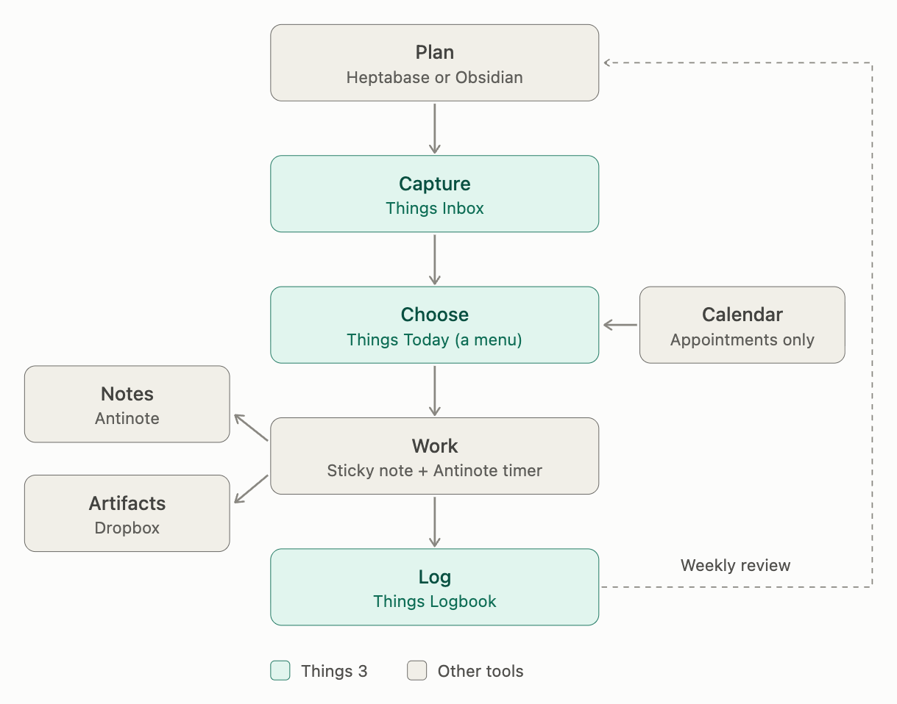

Layers of Operations
I keep switching tools. Mind maps, outliners, calendars with notes, notes with whiteboards, a paper planner. Planning works in any of them. What goes wrong is that one tool tries to do every job, or every tool does a bit of each.
So I designed it the way I’d design a system in an interview: requirements, entities, the flow, then the parts. The tools come last.
1. Requirements
What it must do. Turn a project into tasks. Catch anything that comes up. Let me pick one thing to do now. Keep me on it. Keep what I make. Show me what I did.
How it must feel. Visible, or it doesn’t exist for me. Low friction: capturing takes seconds. One home per thing, so I never wonder where something went. Cheap to switch tools inside a layer.
2. Entities
Projects, tasks, notes, artifacts (what the work produces), appointments, and the log.
3. The flow
Plan → Capture → Choose → Work → Log, and the weekly review sends the log back to Plan. Appointments feed into Choose. Work throws off notes and artifacts.

4. The layers
Plan. Thinking about a whole project: its shape, what goes where. Trees are fine here.
Capture. One inbox. Everything goes in, nothing gets sorted yet.
Choose. Today as a short menu, not an order. Fixed appointments sit beside it.
Work. One task on a sticky note, and a timer. That’s all that’s in front of me.
Notes. Quick notes made while doing something: calls, ideas, scratch.
Artifacts. The finished outputs, in one folder.
Log. What got done, by itself, as a side effect of ticking things off.
Calendar. Fixed appointments only. No tasks.
5. My tools
| Layer | Tool |
|---|---|
| Plan | Heptabase or Obsidian |
| Capture | Things 3 Inbox |
| Choose | Things 3 Today |
| Work | Sticky note + Antinote timer |
| Notes | Antinote |
| Artifacts | Dropbox |
| Log | Things 3 Logbook |
| Calendar | Appointments only |
Three of the layers live in one app, so capture, choose and log never leave it.
6. Deep dive: where notes go
Notes and planning are the two layers that overlap. The rule: a note made while doing goes in the quick-notes app. Thinking about a whole project goes in the planning tool. Finished output goes in the folder. If a quick note grows into a project, it moves to the planning tool.
Why layers
A tool can be swapped. A layer can’t be skipped. If planning moves from one app to another, nothing else changes. Most of my tool switching was really a missing layer.
Notes
- The order of sections follows Hello Interview’s system design delivery framework: requirements, core entities, the API or flow, high-level design, then deep dives.